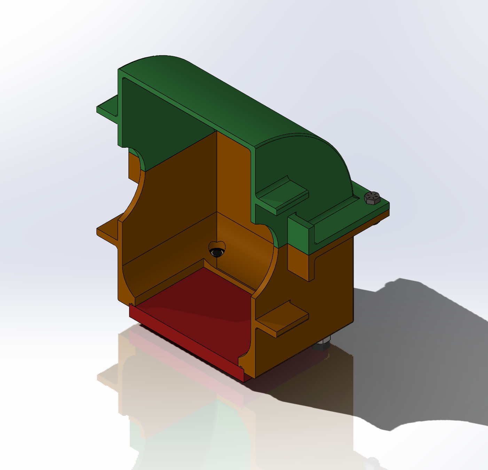

×
Northeastern Electric Racing Drivetrain/Manufacturing

Section View of the Differential Case.
When I first joined electric racing, I joined the drivetrain team and was responsible for designing small test pieces and a sealing mechanism to test out various coatings and how effective they were at leak proofing our 3D printed differential case as well as their resistance to the oil used within our differential. Multiple pieces were created incorporating all the complex geometry (fillets, sharp edges etc...) within the differential case to ensure that the coatings would be able to get into every corner/edge. A plate with an o-ring groove was designed to insure proper sealing while still providing access on the bottom of the differential.
Some of the constraints that were provided were budgetary - cost should be kept to a minimum for the sealing coating and manufacturing of the access plate. Another constraint provided was that we would need to design around a GMC Yukon differential and be able to use a coating that was friendly to the lubricant within the system so that it did not react with either the ABS or the differential lubricant.
Due to the nature of the print and location of the access panel, it was hard to seal the case. A new case was printed with a smaller layer height to create less gaps between each layer, this was then coated with an epoxy that was most succesful in our trials. When the case was fully assembled and tested, it leaked after a day of sitting, this was deemed to have been coming from the access port from visual inspection so a reniforcement plate was made out of thin steel to insure a more even pressure was applied to the o-ring. After this was sealed, the case was retested and leaked once again but this time through the epoxy. Since it was close to our team set deadline for testing to begin we opted to use a "dry" lubricant instead of surrounding the differential in liquid, a grease was utilized instead and the reinforcement plate was then removed to save some weight. This research and process were reused later by other members and a slighty different epoxy was chosen on the next vehicle which prooved to be succesful.